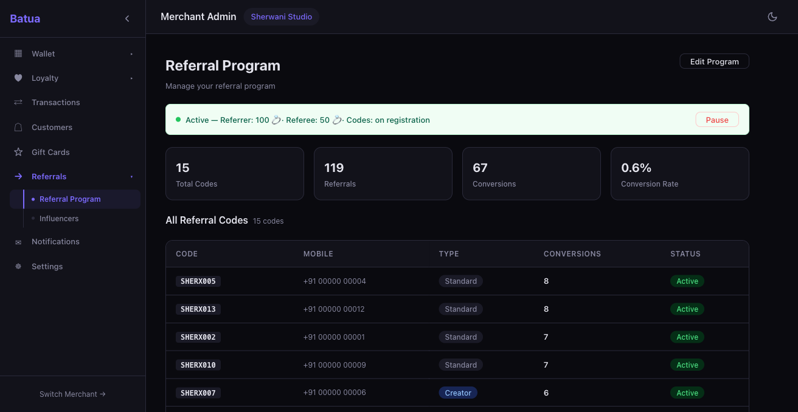
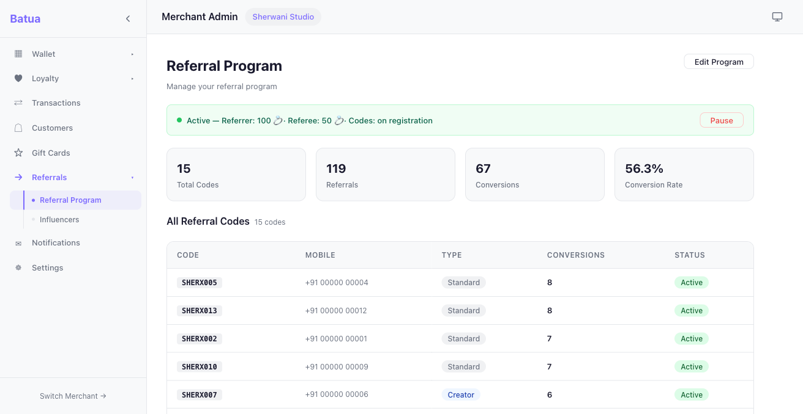
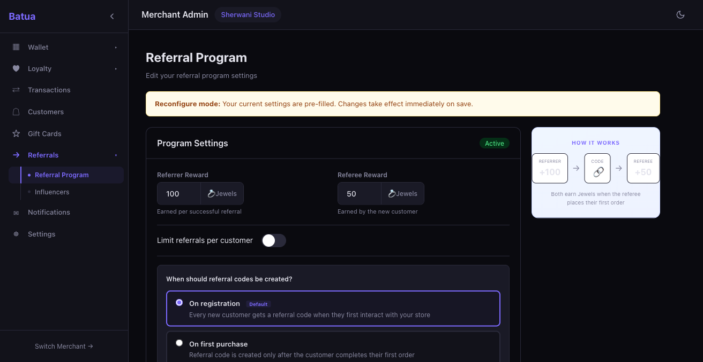
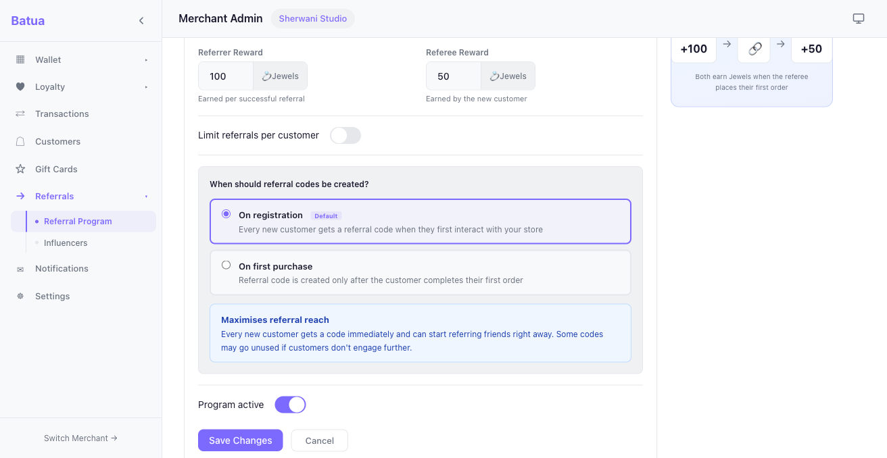
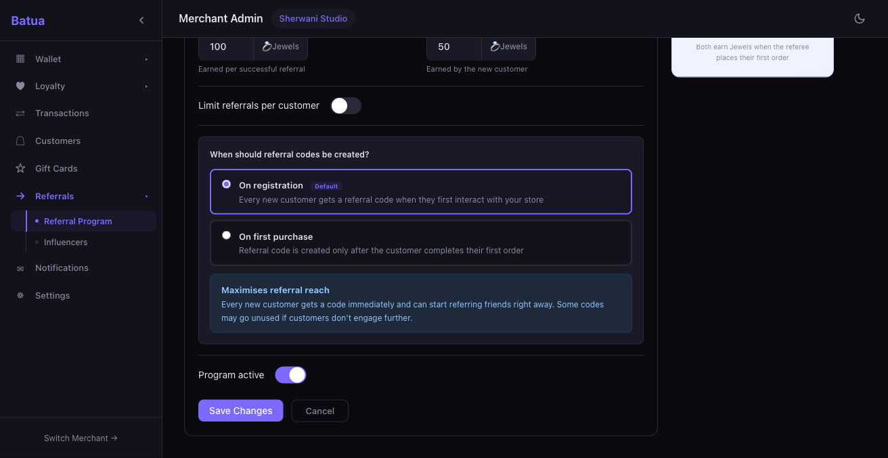
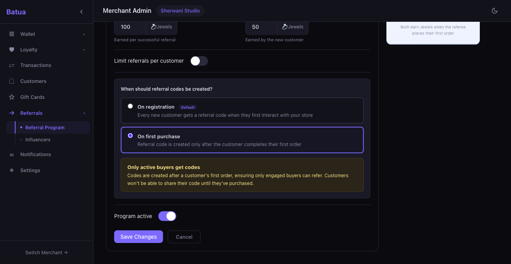
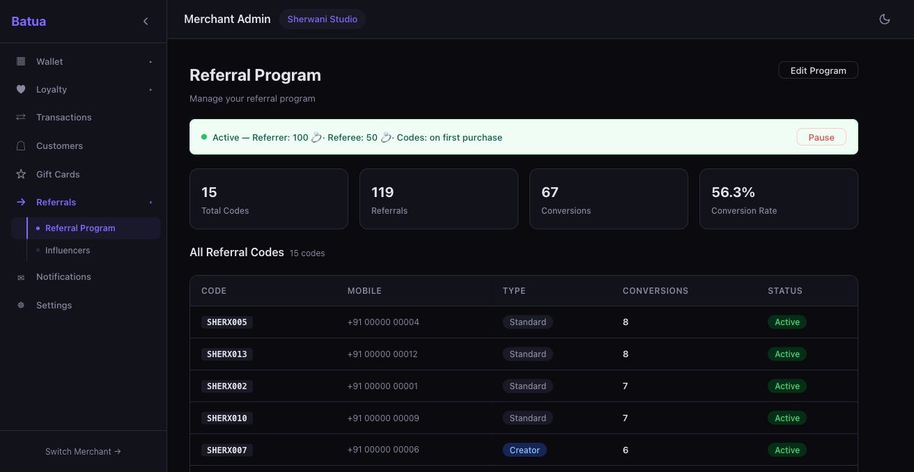

Stakeholder: Merchant Admin
#1 Dashboard shows trigger in status bar PASS
- Navigate to /admin/referrals
- Verify status bar shows "Codes: on registration" text

Dashboard dark mode — status bar shows "Codes: on registration"

Dashboard light mode — status bar shows "Codes: on registration"
Notes: Status bar correctly displays "Active — Referrer: 100 pts · Referee: 50 pts · Codes: on registration". Visible in both dark and light modes.
#2 Edit form shows trigger radio buttons PASS
- Click "Edit Program"
- Scroll to trigger section
- Verify two radio options present with descriptions

Edit form dark mode — "On registration" pre-selected with "Default" badge

Edit form light mode — trigger section with radio buttons
Notes: "On registration" pre-selected (matches DB), "Default" badge visible. "On first purchase" option available. Both radio options have descriptive text underneath.
#3 Tradeoff advice — "On registration" selected PASS
- With "On registration" selected, verify blue advice box appears

Blue advice box — "Maximises referral reach"
Notes: Shows "Maximises referral reach — Every new customer gets a code immediately..." with blue background. Dark mode styling correct.
#4 Tradeoff advice — "On first purchase" selected PASS
- Click "On first purchase" radio
- Verify amber advice box appears

Amber advice box — "Only active buyers get codes"
Notes: Shows "Only active buyers get codes — Codes are created after a customer's first order..." with amber/yellow background. Advice changes reactively when switching radio selection.
#5 Save trigger setting persists PASS
- Select "On first purchase"
- Click Save Changes
- Verify status bar updates and DB persists

Dashboard after save — status bar shows "Codes: on first purchase"
Notes: Status bar immediately shows "Codes: on first purchase". DB query confirms: SELECT code_creation_trigger FROM referral_programs → 'on_first_purchase'. Toast message "Referral program saved" appears.
#6 Edit pre-fills saved trigger PASS
- After saving "on first purchase", click Edit Program again
- Verify radio pre-fills correctly with "On first purchase" selected
Notes: Re-tested — opens with "On first purchase" selected, matching the saved DB value. No screenshot needed (same UI as #2 with different selection).
#7 Light mode rendering PASS
- Switch to light mode
- Verify trigger section and advice box render correctly
Dashboard light mode — status bar and layout
Edit form light mode — trigger section with advice box
Notes: Radio buttons, advice box, and status bar all render cleanly in light mode. Blue advice box has proper contrast.
#8 Dark mode rendering PASS
- Switch to dark mode
- Verify all trigger UI elements render correctly
Dashboard dark mode — status bar visible
Edit form dark mode — blue advice box
Notes: Radio buttons visible with proper borders, advice boxes have dark mode variants (blue becomes dark-blue, amber becomes dark-amber). Text remains readable. Screenshots 01-05 all demonstrate dark mode rendering.
#9 Console and network check PASS
- Check console and network throughout all interactions
Notes: Only error: favicon.png 404 (cosmetic). All API calls (GET/PUT /referrals/programs) return 200. The response includes code_creation_trigger field correctly.
#10 Serde rename_all missing on CodeCreationTrigger enum BUG MEDIUM
- During implementation, attempted to save "on_first_purchase" from the frontend
- Backend returned deserialization error
- Identified missing
#[serde(rename_all = "snake_case")] attribute
- Fixed by adding the serde attribute alongside the sqlx one
- Verified save works correctly after fix
Expected: Backend should deserialize "on_first_purchase" from the frontend JSON payload
Actual: Deserialization failed because the enum variants were not being renamed to snake_case by serde
Root cause: The #[serde(rename_all = "snake_case")] attribute was initially missing from the CodeCreationTrigger enum definition, while the sqlx attribute was present
Severity: MEDIUM — would have blocked the feature entirely
Status: FIXED during implementation